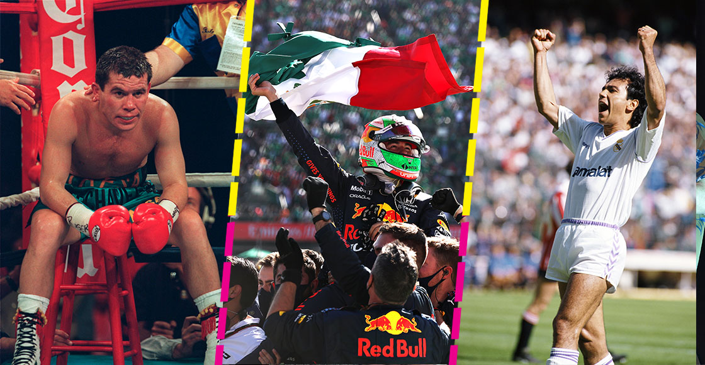
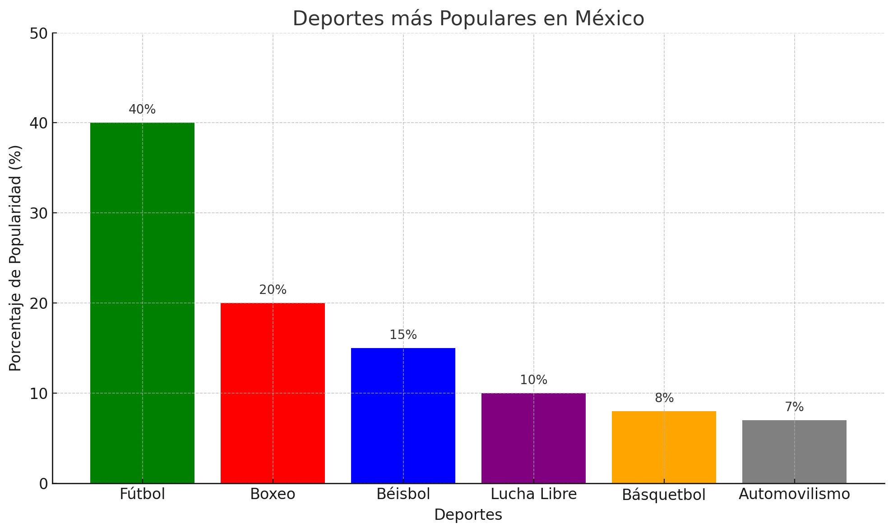

DEPORTES EN MEXICO

1. Fútbol (soccer)
Es el deporte más popular del país.
Tiene una liga profesional (Liga MX) y una gran afición.
La Selección Mexicana ha participado en muchos Mundiales y ha ganado medallas olímpicas.
2. Béisbol
Muy popular en el norte del país (Sonora, Sinaloa, Baja California, etc.).
México tiene la Liga Mexicana de Béisbol (LMB) y la Liga del Pacífico.
Ha tenido buenos desempeños en torneos como el Clásico Mundial.
3. Boxeo
Uno de los deportes con más tradición.
México ha producido grandes campeones como Julio César Chávez, Canelo Álvarez y Juan Manuel Márquez.
Es muy seguido en televisión.
